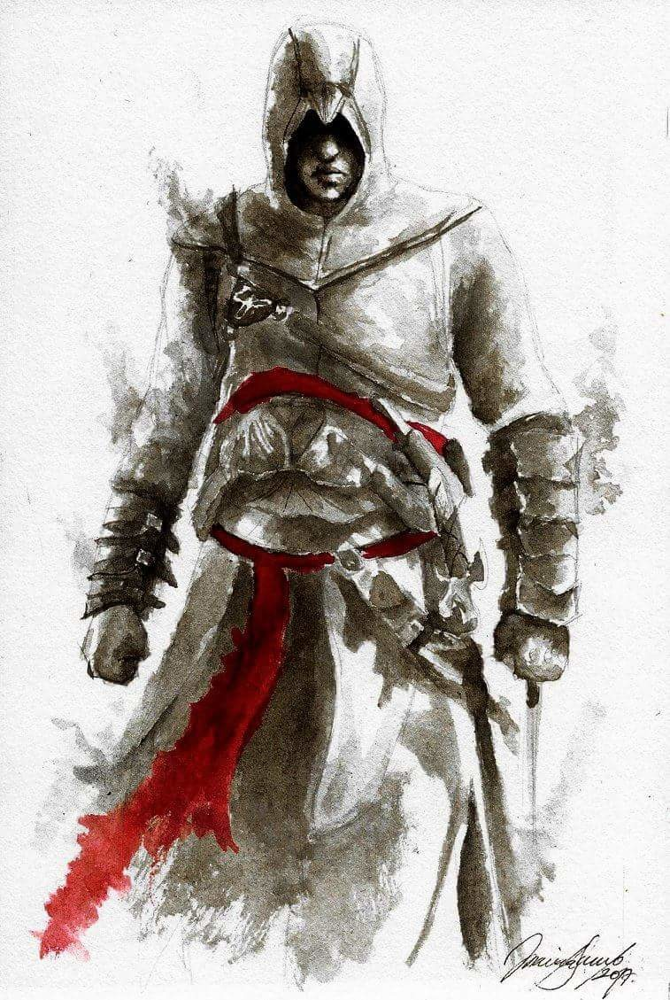

El Códice de Altair Ibn-La'Ahad fue un diario personal escrito por Altair Ibn-La'Ahad, Mentor de los Asesinos Levantinos, tras la muerte de Al Mualim. Documenta sus exploraciones sobre el Fruto del Edén que poseía, y ofrece una visión autobiográfica de su vida y varios artículos relacionados con el asesinato.
Poco después de la muerte de Al Mualim, Altair comenzó a escribir el códice. A lo largo de la mayor parte de su vida, Altair escribió sobre aspectos importantes de su vida en su diario, incluida la guerra en curso entre los Asesinos y los Templarios, su filosofía sobre la vida misma, sus opiniones personales sobre Dios y las religiones en general, y más importante, información obtenida del Fruto del Edén.